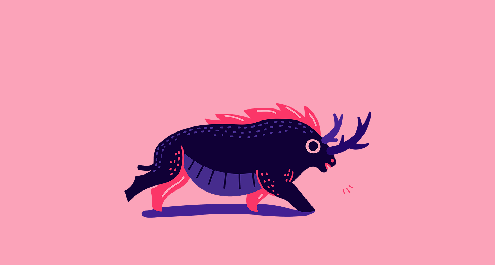
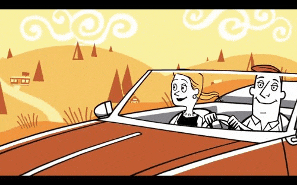
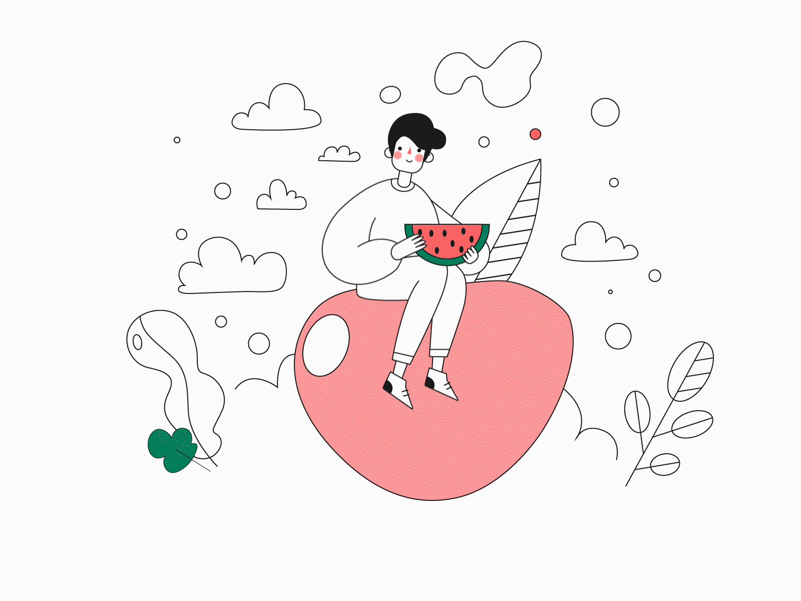
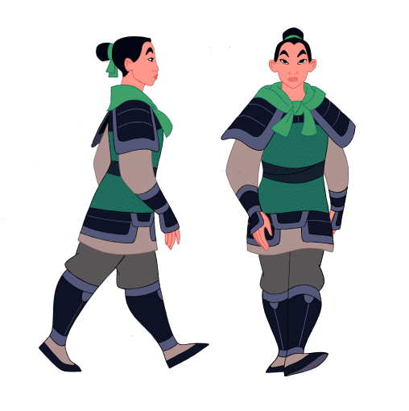

Traditional 2D Animation Style
Traditional 2D animation styles, also known as hand-drawn or cel animation, involve drawing each frame by hand. This animation technique requires a high level of artistry and patience, as every movement is created by drawing individual frames.
The result of these 2D animation styles is fluid, detailed animation that carries a timeless and artisanal feel. The animation process can be labor-intensive and time-consuming, but it offers a unique and charming aesthetic that many modern digital techniques strive to emulate.

Cut-Out animation
Cut-out animation involves creating animated characters, props, and backgrounds from flat materials such as paper, fabric, or digital images and then moving these cut-out pieces frame by frame to create the illusion of motion .
This technique is cost-effective and allows for a distinct, storybook-like aesthetic. It can be produced physically, with actual cut-out pieces, or digitally, using software to simulate the cut-out effect. The animation style is often characterized by its somewhat jerky yet charming movement and is suitable for simple and complex storytelling.
Isometric Animation
Isometric animation involves creating a 3D-like effect using 2D graphics. This technique uses an isometric perspective, which means static objects are drawn at angles that give the illusion of depth and dimension without traditional 3D rendering.
Isometric is often used in arcade games, infographics, and explainer videos because it allows for detailed and visually interesting environments that can be navigated and interacted with in a unique way.


Digital 2D Animation
Digital 2D animation involves creating animations using digital tools and software, such as Adobe Animate, Toon Boom Harmony, or After Effects.
Unlike traditional 2D animation, where each frame is drawn by hand, digital 2D animation allows animators to streamline the process using various techniques, such as tweening, rigging, and vector graphics.
This method offers greater flexibility, efficiency, and precision, enabling animators to produce high-quality, detailed animations with smooth movements. Digital 2D animation is versatile and widely used in various media, including television shows, web series, commercials, and online content.
Travel Portland
Travel Portland employs a unique combination of hand-drawn style and real-world elements to create a significant impact in a grungy animation. This video showcases the city’s diverse attractions using various animation techniques.
The stop-motion animation technique and classic animation concepts are all integrated, resulting in a visually captivating and dynamic presentation.
Created in After Effects, the stop-motion animation highlights Portland’s vibrant culture, scenic landscapes, and eclectic charm, appealing to a broad audience.

Veteran’s Day
A gritty-style liquid animated video has never looked so good. In this commercial for NBC and Syfy, liquid animation combines a grungy stop-motion design to create a striking visual impact.
The video employs toon shading in Cinema 4D, a standard 2D rendering simulation animation technique, to enhance the overall effect and add depth to the animation. This combination results in a visually compelling tribute to Veteran’s Day.